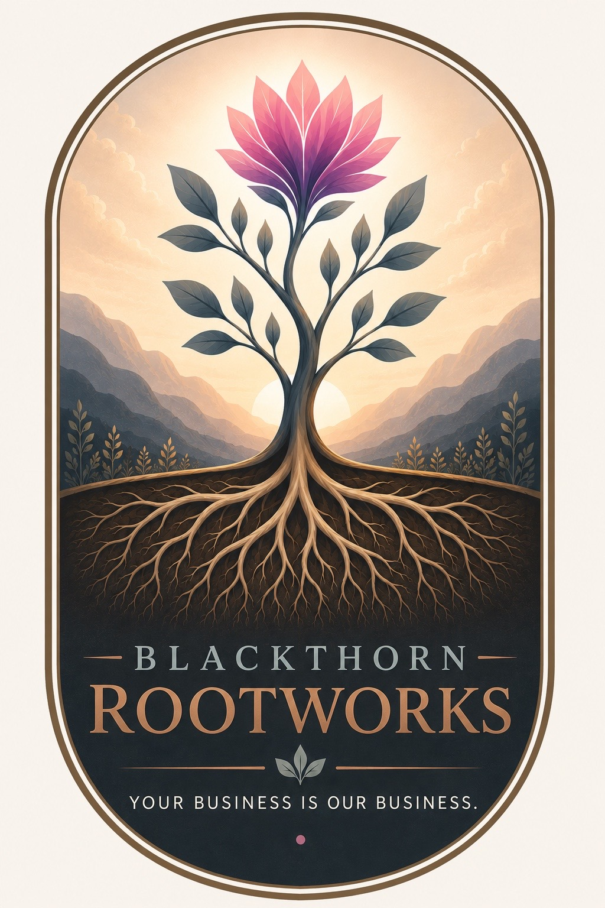

Business Foundations
Clarify what you offer, who it serves, how it works, and what needs to exist before you scale.
Startup consulting for grounded growth
Blackthorn Rootworks helps founders turn promising ideas into businesses with roots: clear offers, practical operations, useful workflows, realistic priorities, and systems that can grow without swallowing the people building them.

Startups do not need corporate theater. They need clear roots: a strong offer, realistic structure, thoughtful systems, and practical support before growth gets messy.
What we help with
Clarify what you offer, who it serves, how it works, and what needs to exist before you scale.
Turn scattered tasks into repeatable workflows, decision points, checklists, and manageable rhythms.
Shape practical next steps for offers, websites, customer paths, messaging, priorities, and early growth.
Spot gaps before they become expensive: access, handoffs, vendors, documentation, bottlenecks, and avoidable chaos.
Our approach
Blackthorn Rootworks brings lessons from large-scale environments into startup life without dragging corporate bloat along with them. The work is practical, plainspoken, and built around what helps a real business function.
Build the roots before you chase the bloom.
Let’s build carefully
Reach out for startup consulting, business foundation planning, workflow cleanup, launch structure, or early growth support.